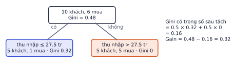
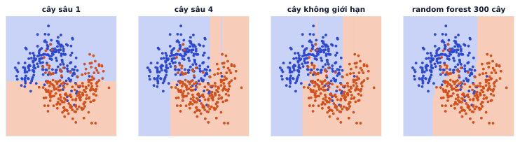
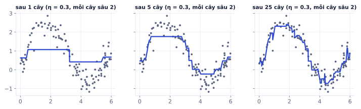
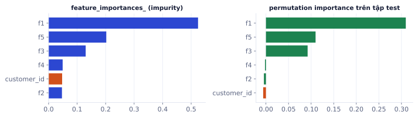
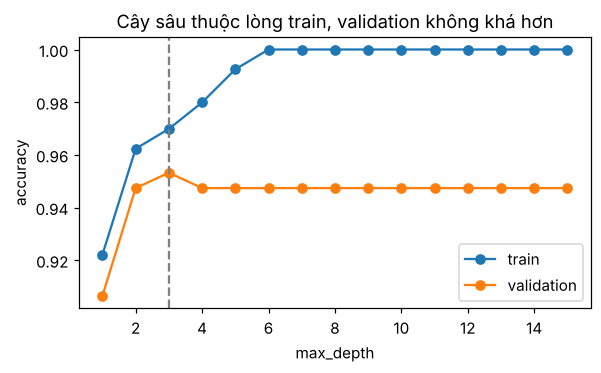

Với dữ liệu dạng bảng (đơn hàng, khách hàng, giao dịch), các model cây như XGBoost và LightGBM vẫn thường thắng deep learning, lại train nhanh trên CPU. Hầu hết các cuộc thi Kaggle dạng bảng đều có gradient boosting trong top. Bài này đi từ một cây quyết định tới rừng cây và boosting, kèm cách đọc "model dùng đặc trưng nào".
Cây quyết định
Vì sao cần học
Cây quyết định là model dễ giải thích nhất: một chuỗi câu hỏi có/không mà người không làm ML cũng đọc được. Nó tự xử lý đặc trưng ở các thang đo khác nhau, quan hệ phi tuyến và tương tác giữa đặc trưng, không cần chuẩn hóa. Và nó là viên gạch của random forest và gradient boosting.
Cây hỏi gì
Cây hỏi liên tiếp các câu có/không về đặc trưng: "thu nhập > 27.5 triệu?", "tuổi < 30?". Mỗi đường đi từ gốc tới lá là một nhóm mẫu. Lá trả về dự đoán: lớp chiếm đa số (phân loại) hoặc trung bình y (hồi quy).
Vì mỗi câu hỏi chỉ so một đặc trưng với một ngưỡng, ranh giới quyết định của cây luôn gồm các đoạn song song với trục: không gian bị cắt thành các hình chữ nhật.
Đo độ "lẫn lộn" của một nút
Ở mỗi nút, cây thử mọi đặc trưng và mọi ngưỡng, chọn cách tách làm các nút con thuần nhất. Độ lẫn lộn đo bằng:
Gini = 1 − Σ pₖ² (pₖ: tỉ lệ lớp k trong nút)
Entropy = −Σ pₖ log₂ pₖ
Gain = độ lẫn của nút cha − Σ (nᵢ/n) · độ lẫn của nút con i
Tỉ lệ hai lớp trong nút
Gini
Entropy (bit)
100% / 0% (thuần)
0
0
90% / 10%
0.18
0.469
60% / 40%
0.48
0.971
50% / 50% (lẫn nhất)
0.5
1
Gini và entropy gần như luôn chọn cùng một cách tách; scikit-learn mặc định dùng Gini vì tính nhanh hơn (không có log).
Ví dụ từng bước
10 khách hàng, cột thu nhập (triệu/tháng) và có mua hay không:
Cây thử mọi ngưỡng nằm giữa hai giá trị liên tiếp. Hai ứng viên tốt nhất:
Ngưỡng
Nhánh trái
Nhánh phải
Gini có trọng số
17.5
3 khách, 0 mua (Gini 0)
7 khách, 6 mua (Gini 0.245)
0.7 × 0.245 = 0.171
27.5
5 khách, 1 mua (Gini 0.32)
5 khách, 5 mua (Gini 0)
0.5 × 0.32 = 0.160
Ngưỡng 27.5 thắng, gain = 0.48 − 0.16 = 0.32.

Lần tách đầu tiên. Nhánh phải đã thuần (Gini 0) nên thành lá "mua"; nhánh trái còn 1 người mua, cây có thể tách tiếp.
Kiểm tra lại phép tính tay bằng scikit-learn, rồi dùng một bộ dữ liệu thật hơn cho các ví dụ còn lại của bài:
importpandasaspdfromsklearn.treeimportDecisionTreeClassifier,export_text# 10 khách hàng của ví dụ trên: cây độ sâu 1 phải chọn đúng ngưỡng 27.5X10=pd.DataFrame({"thu_nhap":[8,12,15,20,25,30,35,40,50,60]})y10=[0,0,0,1,0,1,1,1,1,1]stump=DecisionTreeClassifier(max_depth=1).fit(X10,y10)print(export_text(stump,feature_names=["thu_nhap"]))# 569 khối u, 30 đặc trưng số, nhãn lành/ác (có sẵn trong scikit-learn, không cần tải)fromsklearn.datasetsimportload_breast_cancerfromsklearn.model_selectionimporttrain_test_splitX,y=load_breast_cancer(return_X_y=True,as_frame=True)X_train,X_test,y_train,y_test=train_test_split(X,y,test_size=0.25,stratify=y,random_state=0)tree=DecisionTreeClassifier(max_depth=3,random_state=0).fit(X_train,y_train)print(export_text(tree,feature_names=list(X_train.columns)))# in cây dạng chữ
Cây là model "tham lam": nếu để tự do, nó tách tới khi mỗi lá chỉ còn một mẫu và học thuộc toàn bộ tập train, kể cả nhiễu. Biết cách kìm cây là biết cách dùng nó.
Cây không giới hạn đạt 100% trên train nhưng ranh giới của nó lởm chởm, đầy những "hòn đảo" nhỏ bao quanh từng điểm nhiễu.

Cùng bộ dữ liệu hai vầng trăng có nhiễu. Cây sâu 1 chỉ có một nhát cắt. Cây không giới hạn tạo ra các dải hẹp quanh điểm nhiễu. Random forest trung bình 300 cây cho ranh giới mượt và hợp lý hơn.
Các tham số kìm cây (đều chọn bằng validation):
Tham số
Tác dụng
Giá trị thường thử
max_depth
độ sâu tối đa
3–12
min_samples_leaf
mỗi lá phải có ít nhất n mẫu
1, 5, 20, 50
min_samples_split
nút phải có ít nhất n mẫu mới được tách
2–100
max_features
mỗi lần tách chỉ xét một phần đặc trưng
"sqrt", 0.5
ccp_alpha
cắt tỉa sau khi train, phạt số lá
quét bằng cost_complexity_pruning_path
Một cây đơn có variance cao: đổi vài mẫu dữ liệu là lần tách đầu tiên có thể đổi, kéo theo cả cây đổi hẳn. Hai cách khắc phục là bagging (nhiều cây song song, lấy trung bình) và boosting (nhiều cây nối tiếp, sửa lỗi nhau).
Lỗi hay gặp
Đọc cây sâu như đọc luật. Cây sâu 3 là một bộ luật dễ hiểu. Cây sâu 15 có hàng nghìn lá, không ai đọc được, và các lần tách ở dưới sâu thường chỉ là nhiễu. Nếu cần giải thích cho người khác, giới hạn độ sâu hoặc dùng các công cụ giải thích ở mục cuối.
Bagging và random forest
Vì sao cần học
Random forest là baseline đầu tiên nên chạy cho mọi bài toán bảng: gần như không cần tuning, khó overfit nặng, cho luôn ước lượng độ quan trọng của đặc trưng. Nếu random forest không hơn được hồi quy logistic, vấn đề thường nằm ở dữ liệu chứ không phải model.
Bagging
Bootstrap aggregating: train nhiều cây, mỗi cây trên một mẫu bootstrap (rút ngẫu nhiên n mẫu có hoàn lại từ n mẫu gốc), rồi lấy trung bình (hồi quy) hoặc bỏ phiếu (phân loại).
Vì rút có hoàn lại, mỗi mẫu bootstrap chứa khoảng 63.2% mẫu gốc khác nhau (1 − (1 − 1/n)ⁿ → 1 − 1/e). Khoảng 36.8% còn lại gọi là out-of-bag (OOB), dùng để đánh giá miễn phí: RandomForestClassifier(oob_score=True).
Lý do trung bình giúp: nếu có B model mỗi model có phương sai σ² và độc lập, trung bình của chúng có phương sai σ²/B. Các cây không hoàn toàn độc lập (cùng dữ liệu gốc), nên lợi ích bị giới hạn bởi độ tương quan giữa chúng.
Random forest
Random forest = bagging + mỗi lần tách chỉ xét ngẫu nhiên một tập con đặc trưng (mặc định √(số đặc trưng) cho phân loại). Nếu có một đặc trưng rất mạnh, mọi cây bagging đều tách nó trước và trở nên giống nhau; random forest buộc nhiều cây phải thử đặc trưng khác, nên các cây ít tương quan hơn và trung bình hiệu quả hơn.
Ví dụ từng bước
Bộ dữ liệu giả lập 3.000 mẫu, 20 đặc trưng, 5% nhãn nhiễu. Accuracy 5-fold:
Model
Accuracy (± độ lệch)
Một cây không giới hạn
0.864 ± 0.009
Một cây sâu 5
0.867 ± 0.008
Bagging 200 cây
0.927 ± 0.006
Random forest 300 cây
0.938 ± 0.005
Gradient boosting (HistGradientBoosting)
0.936 ± 0.005
Từ một cây lên rừng cây: tăng 7 điểm, và độ lệch giữa các fold giảm một nửa.
fromsklearn.ensembleimportRandomForestClassifierrf=RandomForestClassifier(n_estimators=500,min_samples_leaf=2,n_jobs=-1,oob_score=True,random_state=0)rf.fit(X_train,y_train)rf.oob_score_# ước lượng accuracy không cần tập validation riêng
Kết quả khi chạy
0.9624413145539906
Thêm cây gần như không bao giờ làm random forest tệ đi, chỉ tốn thêm thời gian. 300–1000 cây là đủ cho hầu hết bài toán.
Gradient boosting
Vì sao cần học
Gradient boosting (XGBoost, LightGBM, CatBoost) là model mạnh nhất hiện nay cho dữ liệu bảng cỡ vừa. Nếu bạn làm dự án phân tích khách hàng, dự đoán doanh số hay chấm điểm rủi ro, đây gần như chắc chắn là model sẽ dùng.
Ý tưởng: cây sau sửa lỗi cây trước
Boosting train các cây nối tiếp. Mỗi cây mới nhỏ (thường sâu 3–8) và học phần còn sai của tổng các cây trước:
F₀(x) = trung bình y
lặp m = 1..M:
rₘ = y − Fₘ₋₁(x) phần dư (với MSE, đúng bằng −gradient của loss)
hₘ = cây nhỏ fit vào rₘ
Fₘ(x) = Fₘ₋₁(x) + η · hₘ(x) η là learning rate, thường 0.01–0.1
Ví dụ từng bước
Ba mẫu có y = 4, 6, 14, learning rate η = 0.1:
F₀ = (4 + 6 + 14)/3 = 8 cho mọi mẫu.
Phần dư r₁ = (−4, −2, 6).
Giả sử cây h₁ học đúng phần dư. Mẫu thứ 3: F₁ = 8 + 0.1 × 6 = 8.6, tiến gần 14 thêm một chút.
Phần dư mới của mẫu 3 là 5.4; cây h₂ lại học tiếp phần đó.
Mỗi bước chỉ sửa 10% lỗi nên cần nhiều cây, nhưng nhờ bước nhỏ mà ít bị cuốn theo nhiễu.

Boosting trên dữ liệu 1 chiều. Sau 1 cây: một bậc thang thô. Sau 5 cây: đã có hình dạng. Sau 25 cây: bám sát quy luật, và bắt đầu bám cả nhiễu nếu tiếp tục.
Vì sao gọi là "gradient"
Với loss bất kỳ L(y, F), thay phần dư bằng âm gradient của loss theo dự đoán: rₘ = −∂L/∂F. Với MSE, −∂L/∂F đúng bằng y − F (phần dư). Với log loss (phân loại), nó là y − p. Nghĩa là boosting chính là gradient descent, nhưng mỗi bước là một cây trong không gian các hàm, thay vì một bước trên vector trọng số.
XGBoost, LightGBM, CatBoost
Ba thư viện cài đặt gradient boosting nhanh, thêm regularization (phạt số lá, phạt giá trị lá), xử lý giá trị thiếu sẵn, và chạy song song.
Điểm mạnh
XGBoost
phổ biến lâu nhất, ổn định, nhiều tài liệu
LightGBM
rất nhanh trên dữ liệu lớn (histogram, cây mọc theo lá)
CatBoost
xử lý đặc trưng dạng chữ (categorical) tốt mà không cần mã hóa
HistGradientBoosting (scikit-learn)
không cần cài thêm, đủ tốt cho phần lớn bài toán
importlightgbmaslgbX_tr,X_val,y_tr,y_val=train_test_split(X_train,y_train,test_size=0.25,stratify=y_train,random_state=0)model=lgb.LGBMClassifier(n_estimators=5000,learning_rate=0.03,num_leaves=31,verbose=-1)model.fit(X_tr,y_tr,eval_set=[(X_val,y_val)],callbacks=[lgb.early_stopping(100)])# dừng khi 100 cây liền không cải thiện valmodel.best_iteration_# số cây thật sự dùng
Training until validation scores don't improve for 100 rounds
Early stopping, best iteration is:
[122] valid_0's binary_logloss: 0.134858
122
Ghi nhớ: learning rate nhỏ thì cần nhiều cây hơn nhưng thường tổng quát tốt hơn. Đặt n_estimators lớn và dùng early stopping trên validation để tự chọn số cây.
Lỗi hay gặp
Random forest và boosting phản ứng khác nhau với số cây. Random forest thêm cây chỉ tốn thời gian. Boosting thêm cây quá nhiều thì overfit vì mỗi cây học tiếp phần dư, kể cả phần dư là nhiễu. Không có early stopping, boosting 5.000 cây có thể tệ hơn 500 cây.
Tự kiểm tra nhanh
Ba mẫu y = 2, 4, 9, η = 0.2. Giả sử cây đầu tiên học đúng phần dư.
Feature importance và tuning
Vì sao cần học
Sau khi có model tốt, câu hỏi tiếp theo luôn là "model dựa vào đâu để quyết định?". Đó là câu hỏi của người làm sản phẩm, của sếp, và là cách bạn phát hiện rò rỉ (một cột quan trọng bất thường thường là cột chứa đáp án).
Hai loại importance
Impurity importance (feature_importances_): cộng tổng gain mà mỗi đặc trưng mang lại qua mọi lần tách. Tính nhanh, nhưng thiên vị đặc trưng có nhiều giá trị khác nhau (ID, số liên tục), vì chúng có nhiều ngưỡng để thử nên dễ tình cờ tìm được nhát cắt tốt trên train.
Permutation importance: xáo trộn ngẫu nhiên một cột trên tập validation/test, đo điểm tụt bao nhiêu. Cột không quan trọng thì xáo cũng chẳng sao.
Ví dụ từng bước
Thêm cột customer_id (số ngẫu nhiên, không liên quan gì tới nhãn) vào dữ liệu có 5 đặc trưng thật:
Cột
Impurity importance
Permutation importance
f1
0.524
0.310
f5
0.202
0.110
f3
0.130
0.092
f4
0.049
−0.002
customer_id
0.047
−0.006
f2
0.047
−0.005
Impurity importance cho customer_id ngang với f2, f4. Permutation importance cho đúng bằng 0: xáo ID không làm model tệ đi.

Cột ID ngẫu nhiên (cam) "có vẻ" quan trọng theo impurity, nhưng permutation importance cho thấy nó vô dụng.
SHAP: giải thích từng dự đoán. Importance cho biết đặc trưng nào quan trọng nói chung. SHAP (thư viện shap) chia nhỏ một dự đoán thành đóng góp của từng đặc trưng: "khách này được dự đoán rời đi 0.82 vì: 3 tháng không mua (+0.25), vừa khiếu nại (+0.18), là khách lâu năm (−0.06)…". Với model cây, shap.TreeExplainer tính rất nhanh. Đây là công cụ hay được hỏi khi phỏng vấn cho vị trí làm với dữ liệu bảng.
Tuning gradient boosting
Thứ tự nên tune (LightGBM), mỗi bước giữ các tham số khác cố định:
learning_rate khoảng 0.03–0.1, n_estimators lớn với early stopping.
num_leaves (độ phức tạp mỗi cây): 15–255.
min_child_samples (mẫu tối thiểu mỗi lá): 10–100, tăng nếu overfit.
feature_fraction, bagging_fraction: 0.6–0.9, thêm ngẫu nhiên như random forest.
lambda_l2: 0–10.
Dùng Optuna để tìm tự động thay vì grid search: nó thử các vùng hứa hẹn nhiều hơn, thường cần ít lần thử hơn hẳn.
Lỗi hay gặp
Tuning quá tay trên một tập validation nhỏ. Thử 500 cấu hình và chọn cái tốt nhất trên 300 mẫu validation là đang overfit tập validation. Dùng cross-validation khi dữ liệu ít, và kỳ vọng cải thiện từ tuning thường chỉ vài phần trăm; đặc trưng tốt hơn thường giúp nhiều hơn.
Tóm tắt bài và thuật ngữ
Model
Cách kết hợp cây
Giảm
Cần tuning
Dùng khi
Cây quyết định
một cây
—
độ sâu
cần luật dễ giải thích
Random forest
song song, trung bình
variance
rất ít
baseline mạnh, nhanh có kết quả
Gradient boosting
nối tiếp, sửa lỗi
bias (và variance nhờ η nhỏ)
vừa phải, cần early stopping
muốn điểm cao nhất trên dữ liệu bảng
Thuật ngữ
Nghĩa
decision tree
cây quyết định
node / leaf
nút hỏi / lá trả lời
Gini impurity / entropy
hai cách đo độ lẫn lộn của nút
information gain
độ lẫn giảm được sau một lần tách
bootstrap
rút mẫu có hoàn lại
bagging
train nhiều model trên các mẫu bootstrap rồi gộp
out-of-bag (OOB)
mẫu không được rút vào bootstrap, dùng để đánh giá
random forest
bagging + chọn ngẫu nhiên đặc trưng mỗi lần tách
boosting
train nối tiếp, model sau sửa lỗi model trước
early stopping
dừng thêm cây khi validation không cải thiện
feature importance
mức độ model dựa vào một đặc trưng
permutation importance
điểm tụt khi xáo trộn một cột
SHAP
phân rã một dự đoán thành đóng góp từng đặc trưng
Ô tự chấm đã giải đúng0 / 6
Bài 1
Gini và information gain
tính tay
Nút cha có 10 mẫu: 6 dương, 4 âm. Một phép tách cho nút trái (4 dương, 0 âm) và nút phải (2 dương, 4 âm).
Lời giải
Cha: 1 − (0.36 + 0.16) = 0.48. Trái thuần nên Gini 0. Phải: 1 − (1/9 + 4/9) = 4/9 ≈ 0.444. Trọng số theo số mẫu: 0.4·0 + 0.6·0.444 = 0.267. Gain = 0.48 − 0.267 = 0.213.
Bài 2
Một vòng gradient boosting
tính tay
Ba mẫu có y = 3, 5, 10. Khởi tạo F₀ = trung bình y. Giả sử cây đầu tiên dự đoán đúng hoàn toàn phần dư. Learning rate η = 0.1.
Lời giải
F₀ = 18/3 = 6. Phần dư: −3, −1, 4. F₁ = F₀ + 0.1·r = 5.7, 5.9, 6.4. Mỗi vòng chỉ đi 10% quãng đường, nên cần nhiều cây, nhưng bước nhỏ giúp tránh overfit.
Bài 3
Đoán trước rồi kiểm chứng
khái niệm
Với DecisionTreeClassifier trên một tập dữ liệu có nhiễu, khi tăng max_depth từ 1 lên 20:
Accuracy trên train thay đổi thế nào?
Accuracy trên validation thay đổi thế nào?
Random forest 300 cây với cùng max_depth=20 thì sao?
Viết dự đoán ra giấy, rồi chạy đoạn code trong lời giải để kiểm chứng.
Lời giải
Train tăng đều, tới gần 100%. 2. Validation tăng rồi giảm (hình chữ U ngược): sâu quá thì học thuộc nhiễu. 3. Random forest giữ validation cao ở độ sâu lớn vì trung bình nhiều cây làm giảm variance.
Train LightGBM trên load_breast_cancer với learning_rate=0.05, tối đa 2000 cây, dừng sớm sau 50 vòng không cải thiện trên validation. In số cây tốt nhất và vẽ 10 đặc trưng có permutation importance cao nhất.
Dùng: cây quyết định, cách cây chọn câu hỏi chia, đọc luật của cây.
Một công ty tài chính muốn một model giải thích được để duyệt khoản vay. Train DecisionTreeClassifier(max_depth=2) trên dữ liệu thu nhập, tỉ lệ nợ trên thu nhập và số lần trễ hạn, in các luật bằng export_text, rồi dùng cây để quyết định cho một người thu nhập 18 triệu/tháng, tỉ lệ nợ 0,55, trễ hạn 0 lần.
importnumpyasnpfromsklearn.treeimportDecisionTreeClassifier,export_textfromsklearn.model_selectionimporttrain_test_splitrng=np.random.default_rng(0)n=1000income=rng.lognormal(2.7,0.5,n)# triệu đồng/thángdebt_ratio=rng.uniform(0,1,n)late=rng.poisson(0.6,n)risk=1.5*debt_ratio+0.6*late-0.03*income+rng.normal(0,0.3,n)default=(risk>0.9).astype(int)# 1 = vỡ nợX=np.column_stack([income,debt_ratio,late]);ten_cot=["income","debt_ratio","late"]# TODO: chia train/test (random_state=0), fit cây depth 2, in luật, acc, quyet_dinh cho người mới
Code của bạn
Viết code vào chỗ trống rồi bấm Chạy.
Gợi ý
export_text(cay, feature_names=ten_cot) in cây dưới dạng các dòng |--- debt_ratio <= 0.48. Đọc từ trên xuống như một chuỗi câu hỏi if/else.
Code tham khảo
X_tr,X_te,y_tr,y_te=train_test_split(X,default,test_size=0.25,random_state=0)cay=DecisionTreeClassifier(max_depth=2,random_state=0).fit(X_tr,y_tr)print(export_text(cay,feature_names=ten_cot))acc=cay.score(X_te,y_te)quyet_dinh=cay.predict([[18,0.55,0]])[0]print(f"accuracy test = {acc:.3f}; người mới: {'từ chối'ifquyet_dinhelse'duyệt'}")
Chỉ với hai tầng câu hỏi, cây đã đúng khoảng 4/5 trường hợp, và nhân viên tín dụng đọc được từng luật. Đây là lý do cây nông vẫn được dùng trong các lĩnh vực cần giải thích như ngân hàng, bảo hiểm.
Bài 6
Tìm độ sâu phù hợp
ứng dụng
Dùng: độ sâu và overfitting, so train với validation, min_samples_leaf.
Trên bộ dữ liệu ung thư vú của scikit-learn, train cây với độ sâu 1 tới 15. Vẽ accuracy train và validation theo độ sâu, chọn độ sâu tốt nhất theo validation. Sau đó thử cây không giới hạn độ sâu nhưng min_samples_leaf=10: kết quả validation so với cây sâu nhất thế nào?
importnumpyasnpimportmatplotlib.pyplotaspltfromsklearn.datasetsimportload_breast_cancerfromsklearn.treeimportDecisionTreeClassifierfromsklearn.model_selectionimporttrain_test_splitX,y=load_breast_cancer(return_X_y=True)X_tr,X_va,y_tr,y_va=train_test_split(X,y,test_size=0.3,random_state=1,stratify=y)# TODO: acc_tr, acc_va cho depth 1..15; sau_tot; acc_leaf
Code của bạn
Viết code vào chỗ trống rồi bấm Chạy.
Gợi ý
Lặp for d in range(1, 16), mỗi lần DecisionTreeClassifier(max_depth=d, random_state=0). Nếu nhiều độ sâu cùng điểm validation cao nhất, np.argmax chọn độ sâu nhỏ nhất: cây đơn giản hơn là lựa chọn tốt khi hòa.
Code tham khảo
depths=range(1,16)acc_tr,acc_va=[],[]fordindepths:c=DecisionTreeClassifier(max_depth=d,random_state=0).fit(X_tr,y_tr)acc_tr.append(c.score(X_tr,y_tr));acc_va.append(c.score(X_va,y_va))sau_tot=int(np.argmax(acc_va)+1)acc_leaf=DecisionTreeClassifier(min_samples_leaf=10,random_state=0).fit(X_tr,y_tr).score(X_va,y_va)fig,ax=plt.subplots(figsize=(6,3.2))ax.plot(depths,acc_tr,marker="o",label="train");ax.plot(depths,acc_va,marker="o",label="validation")ax.axvline(sau_tot,color="gray",ls="--");ax.legend()ax.set(xlabel="max_depth",ylabel="accuracy",title="Cây sâu thuộc lòng train, validation không khá hơn")print(f"độ sâu tốt nhất: {sau_tot}, validation {max(acc_va):.3f}; min_samples_leaf=10: {acc_leaf:.3f}")
Kết quả khi chạy
độ sâu tốt nhất: 3, validation 0.953; min_samples_leaf=10: 0.936

Bài 7
Một cây hay cả khu rừng
ứng dụng
Dùng: bagging, random forest, độ ổn định khi đổi dữ liệu, out-of-bag score.
Cùng dữ liệu ung thư vú, so một cây sâu với random forest 200 cây. Để thấy variance, train mỗi loại 10 lần, mỗi lần trên một cách chia train/test khác nhau (random_state 0–9), rồi so trung bình và độ lệch chuẩn của accuracy test. Cuối cùng xem oob_score_ của forest: ước lượng accuracy mà không cần tập validation.
importnumpyasnpfromsklearn.datasetsimportload_breast_cancerfromsklearn.treeimportDecisionTreeClassifierfromsklearn.ensembleimportRandomForestClassifierfromsklearn.model_selectionimporttrain_test_splitX,y=load_breast_cancer(return_X_y=True)# TODO: acc_cay, acc_rung (mỗi list 10 số); oob
Code của bạn
Viết code vào chỗ trống rồi bấm Chạy.
Gợi ý
Trong vòng lặp for s in range(10): chia với random_state=s, fit hai model, ghi score. Forest có OOB: RandomForestClassifier(n_estimators=200, oob_score=True, random_state=0).
một cây: 0.930 ± 0.025
forest : 0.961 ± 0.010 (OOB lần chia cuối: 0.967)
Mỗi cây trong rừng học trên một mẫu bootstrap và một tập con đặc trưng khác nhau, nên sai theo những cách khác nhau; lấy biểu quyết thì các sai lệch triệt tiêu bớt. Kết quả: chính xác hơn và ổn định hơn khi dữ liệu đổi.
Bài 8
Đặc trưng nào thật sự quan trọng
ứng dụng
Dùng: feature importance của cây (Gini), permutation importance trên validation, hai cạm bẫy: cột mã ngẫu nhiên và cột trùng thông tin.
Bạn dự đoán khách có mua gói cao cấp không, từ thu nhập và tuổi. Bảng dữ liệu còn có hai cột "bẫy": thu_nhap_usd (chính là thu nhập, chỉ đổi đơn vị và làm tròn), và ma_kh (mã khách hàng, vô nghĩa). So hai cách đo importance: Gini (feature_importances_, tính trên train) và permutation (xáo từng cột trên validation, xem accuracy giảm bao nhiêu). Sau đó bỏ cột thu_nhap_usd và đo lại.
Hai bài học. Thứ nhất, ma_kh vô nghĩa vẫn nhận Gini importance dương (cột có nhiều giá trị khác nhau luôn tìm được chỗ chia "trông có vẻ tốt" trên train), còn permutation trên validation cho gần 0. Thứ hai, khi hai cột chứa cùng thông tin, cả hai cách đều chia đôi tầm quan trọng: nhìn riêng từng cột, thu nhập trông kém quan trọng hơn thực tế nhiều. Trước khi kết luận "đặc trưng này không quan trọng", kiểm tra xem có cột nào tương quan mạnh với nó không.
Cuộc thi Kaggle dạng bảng
Chọn Titanic (phân loại, nhỏ, dễ bắt đầu) hoặc House Prices (hồi quy, nhiều đặc trưng hơn). Mục tiêu là học quy trình thi đấu có kỷ luật, không phải leo hạng bằng mọi giá.
Các bước
Đọc dữ liệu, EDA nhanh: giá trị thiếu, phân bố biến mục tiêu, tương quan.
Baseline: random forest với xử lý tối thiểu. Nộp submission đầu tiên để có mốc.
Feature engineering: ít nhất 3 đặc trưng mới có lý do rõ ràng (Titanic: chức danh từ tên, kích thước gia đình, khoang tàu từ số cabin).
LightGBM hoặc XGBoost với cross-validation 5-fold. Dùng điểm CV để ra quyết định, không dùng bảng xếp hạng công khai.
Tuning bằng Optuna 50 lượt.
Ghi nhật ký thí nghiệm: mỗi dòng là một thay đổi, điểm CV, điểm public.
Nhật ký mẫu
#
Thay đổi
CV
Public
1
RF baseline
0.812
0.775
2
+ chức danh, kích thước gia đình
0.829
0.787
Xong khi
Có điểm công khai trên Kaggle vượt baseline của chính bạn.
Nhật ký có ít nhất 5 thí nghiệm, kể cả những thay đổi làm điểm tệ đi.